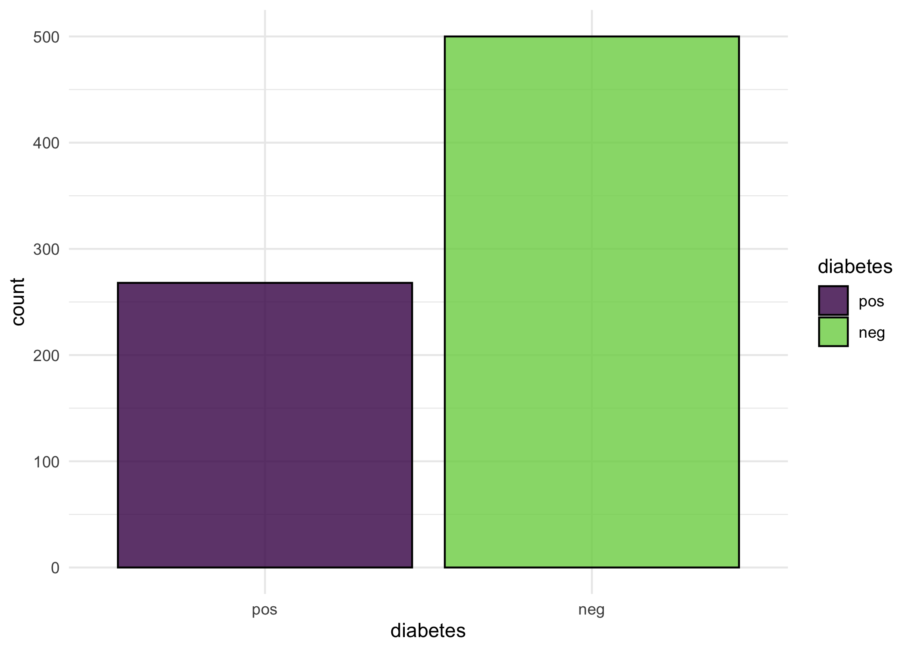
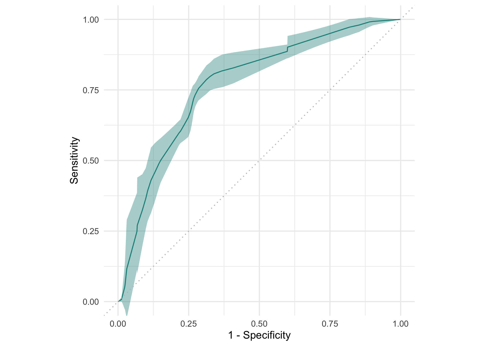
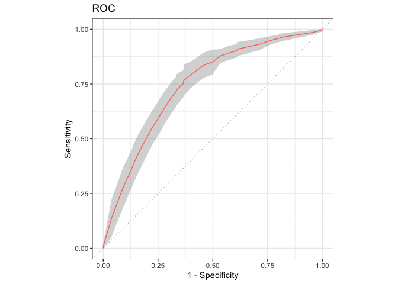

Package website: release | dev


This R package provides visualizations for mlr3 objects such as tasks, predictions, resample results or benchmark results via the autoplot() generic of ggplot2.
Installation
Install the last release from CRAN:
install.packages("mlr3")Install the development version from GitHub:
remotes::install_github("mlr-org/mlr3viz")Short Demo
library(mlr3)
library(mlr3viz)
task = tsk("pima")$select(c("age", "glucose", "insulin"))
learner = lrn("classif.rpart", predict_type = "prob")
rr = resample(task, learner, rsmp("cv", folds = 10))
# Default plot for task
autoplot(task)
# Pairs plot from GGally
autoplot(task, type = "pairs")
# ROC curve for the ResampleResult
autoplot(rr, type = "roc")